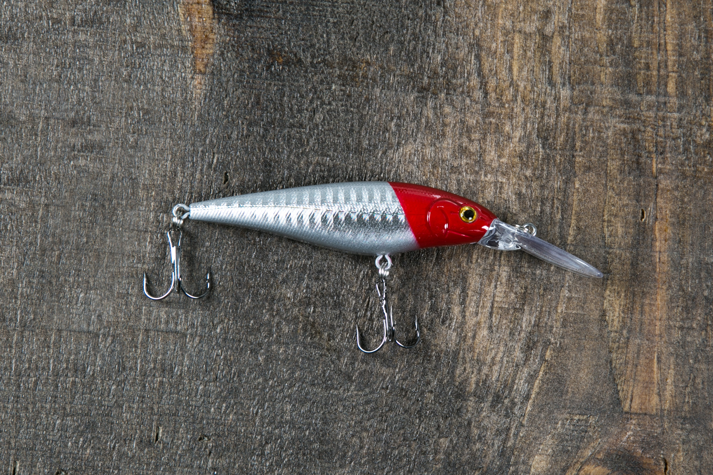

Home
FshnPro-Information
coaching
Top Products
Top Selling Products
1. Threadfin glide bait

This is our top selling glide bait, the threadfin, the threadfin is a small shad-like bait that has the reaslism to bring it too life. The threadfin even comes with a rooster tail attachment at the bottom and it has 3 hooks on the set of one located on the belly of the bait. This thing garrentees happieness when you catch a fish every cast, order one now and you'll be satisfied.
2. Red & silver crankbait

This is our second best selling lure at FshnPro, it is a red & silver crankbait also you have the choice to order the lure with or without a lip. The lipped crankbait is more commonly bought